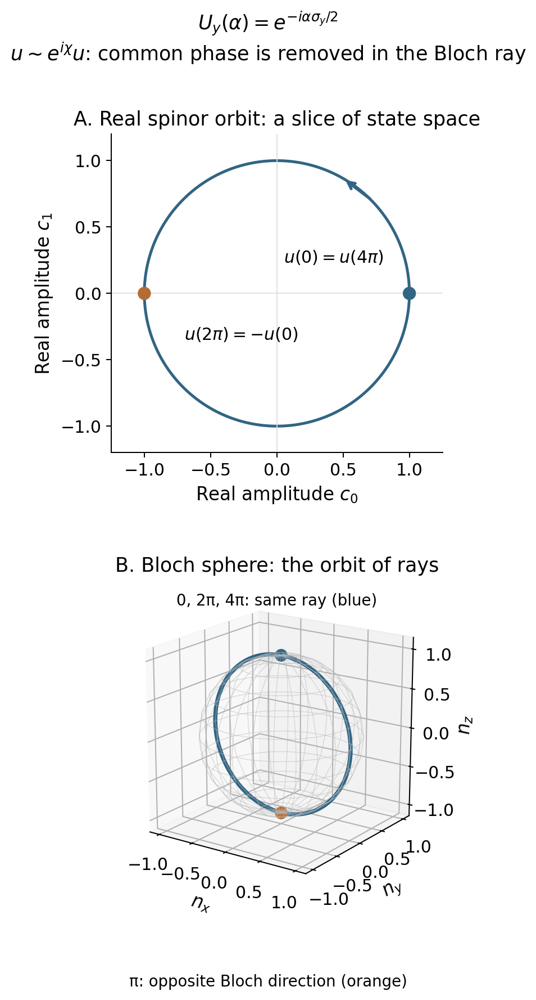
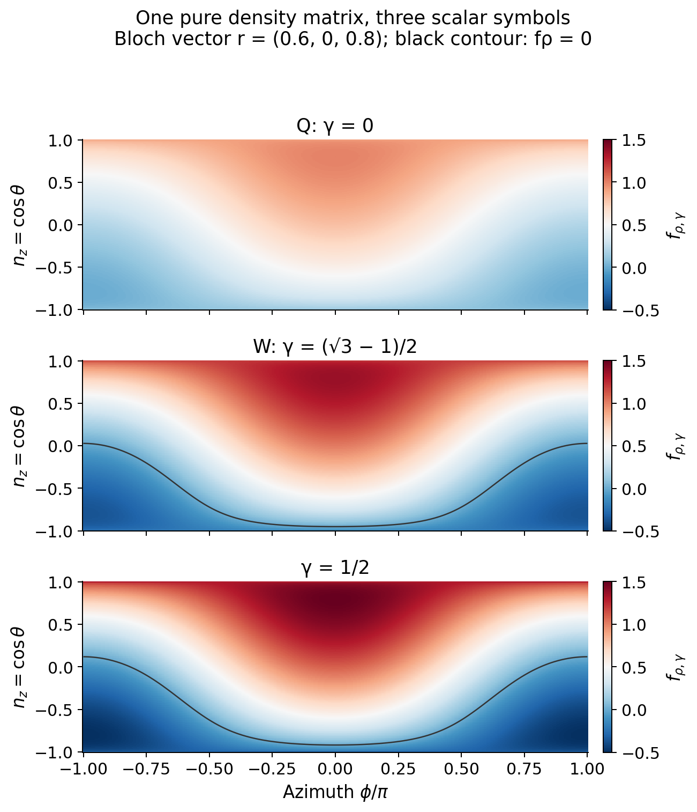
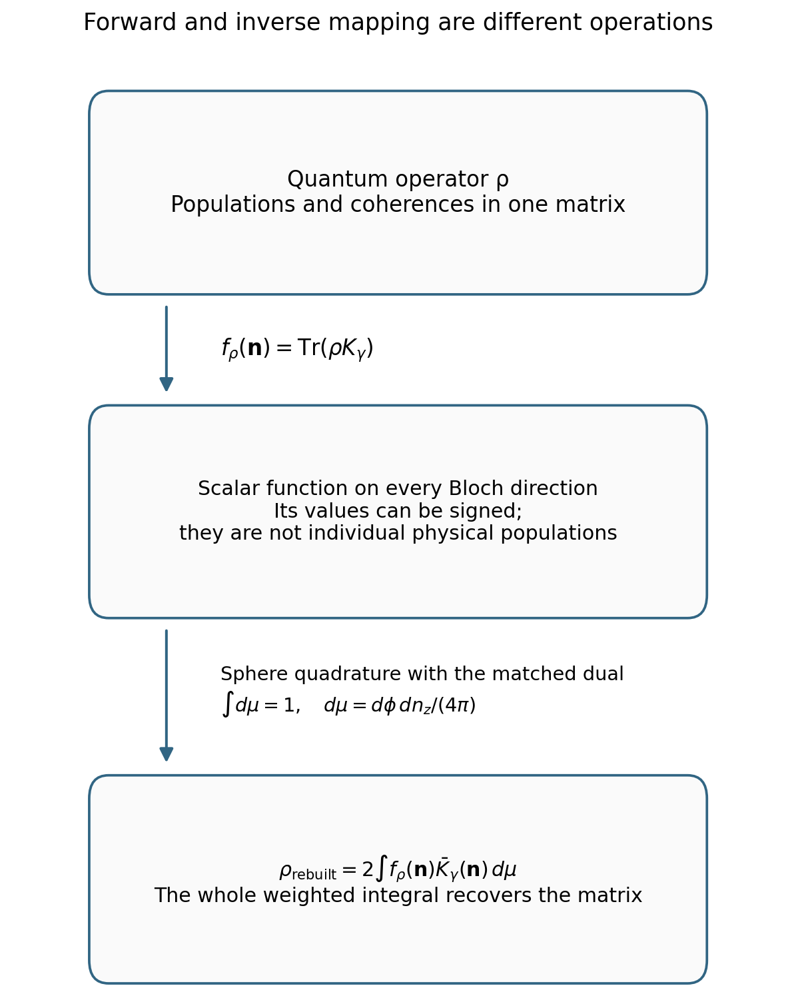
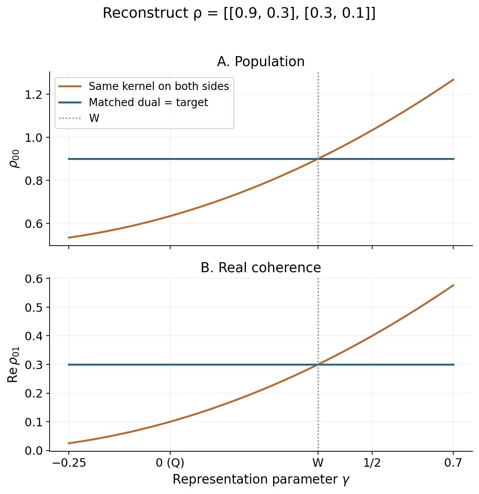

MQC Series - Part VI
CPS Foundations and Dual Kernels
MMST replaces a finite electronic system by fictitious oscillators. CPS asks a more precise question: can the finite system itself be represented on a constrained phase space, with an explicit rule for recovering every operator? Answering that question requires a kernel, a measure, and a dual.
CPS means constraint coordinate–momentum phase space. Parts IV and V introduced MMST and spin mapping. This part follows their motivation into the assumptions, parameter count, kernel, sphere integral, and operator reconstruction. Part VII then examines propagation and practical trajectory workflows.
Interactive examples: rotate a spinor and its Bloch ray; map a density and reconstruct it with a dual. Each example also has downloadable Python figures.
Conventions. Use an orthonormal, fixed diabatic basis with \(F\ge2\) states and set \(\hbar=1\). Nuclear variables are \((R,P)\); mapping variables are \((x_n,p_n)\). Define \(z_n=(x_n+ip_n)/\sqrt2\) and the dimensionless action \(J_n=|z_n|^2\). Here the diagonal offset is \(J_n-\gamma\). Parts IV and V write their parameter inside a factor one-half, so their \(\Gamma=2\gamma\). Ordinary oscillator MMST has \(\gamma=1/2\) in the convention used below.
1. What MMST Maps, and What Remains Unresolved
Start with the electronic potential operator \(V(R)=\sum_{nm}V_{nm}(R)|n\rangle\langle m|\). Stock–Thoss oscillator mapping identifies each electronic basis state with one excitation in its corresponding fictitious oscillator:
The identity is exact on that subspace. The oscillator Hilbert space is larger, so projection and the operator representation matter. With \(\hat a_n=(\hat x_n+i\hat p_n)/\sqrt2\), the number operator is \(\hat a_n^\dagger\hat a_n=(\hat x_n^2+\hat p_n^2-1)/2\). Its Weyl symbol is \(J_n-1/2\). For a real symmetric potential matrix, the familiar scalar Hamiltonian is therefore
This formula alone does not specify a simulation. One must still specify how the physical electronic state is represented initially, how the enlarged space is projected, what dynamics propagates the variables, and how populations are read out. Full Cartesian Wigner sampling, focused initialization, and windowed methods are different protocols.
The source of concern is already visible: an exact operator embedding does not make independent classical oscillator trajectories exact for a coupled electron–nuclear system. Nor does an individual number symbol have to remain a physical probability. These are questions about representation and propagation that should be separated before proposing a repair. The MMST transformation itself is not an intrinsically inaccurate representation. [1]
2. Why Liu and Collaborators Developed CPS
The published motivation has several stages. Liu's unified mapping framework sought to derive finite-state mapping Hamiltonians directly from operator relations, with the Meyer–Miller Hamiltonian as one member, rather than requiring the conventional single-excitation oscillator construction. He and Liu's 2019 work then explored nonadiabatic dynamics using a constrained electronic phase space and a physically constrained population construction. That paper explicitly recognized the quantum exactness of MMST. [2]
The 2021 formulation made the broader problem explicit: construct an invertible correspondence between finite electronic operators and phase-space symbols, combine a constrained electronic space with the continuous nuclear space, and derive practical trajectory approximations from that representation. It also showed why the scalar offset need not be positive and why it can be generalized to a commutator matrix. [3] [4]
The later CPS review emphasizes another practical motivation: retain a useful coordinate–momentum description whose electronic equations are linear, while treating a composite system with discrete electronic and continuous nuclear variables. This is a computationally convenient representation of the finite system, with an explicit inverse transformation. [5]
These are the authors' stated theoretical and algorithmic aims. Our teaching interpretation is to separate three questions: what represents the quantum operator, what recovers its expectation, and what approximation propagates it? CPS clarifies those questions. It does not establish that the original MMST mapping was wrong, or that every CPS trajectory method eliminates ZPE leakage.
3. Why Map Operators onto Phase Space?
A wavefunction alone is insufficient for this task. We need one representation for the initial density, the Hamiltonian, the force operator, and any final observable. Let \(K(u)\) be an operator-valued kernel labeled by a continuous phase-space point \(u\). Associate an electronic operator \(A\) with the scalar function
For example, the population projector \(C_n=|n\rangle\langle n|\) gives a population symbol; \(V(R)\) gives a potential symbol; \(-\nabla_RV(R)\) gives a force symbol. A continuous symbol can be integrated by quadrature or sampling, and its Hamiltonian can motivate a trajectory approximation. To make the representation useful, however, these scalar functions must contain enough information to reconstruct \(A\).
The requirement is therefore stronger than reproducing one selected population. For every pair of electronic operators, we want a trace identity of the form
The second kernel \(\bar K\) is the dual needed to make this identity hold. The factor \(F\) belongs to our normalized-measure convention; a measure of total volume \(F\) absorbs it. We will derive both the measure and the dual below.
Mapping supplies a different representation of the same information. It does not by itself improve accuracy, and it does not make operator multiplication ordinary multiplication of symbols. Also, the one-to-one correspondence is with the finite-dimensional space of allowed operator symbols, not with every possible function on the sphere.
4. Assumptions, Parameter Counting, and the Kernel
Why should a kernel have the familiar form \(zz^\dagger-\gamma I\), and why should there be exactly one parameter? Neither statement follows from the word “mapping.” We must first specify the construction. Consider the scalar, fixed-radius family with these requirements:
- A point labels one normalized complex direction \(u\), with \(u^\dagger u=1\); the common phase of \(u\) is redundant.
- The kernel is Hermitian, so Hermitian observables have real symbols.
- A change of electronic basis acts covariantly: \(K(Uu)=U K(u)U^\dagger\) for every \(U\in U(F)\).
- The identity has symbol one at every point: \(\operatorname{Tr}K(u)=1\).
- For the standard Cartesian CPS branch, the direction-dependent part is a positive rank-one outer product of canonical mapping amplitudes.
The third requirement prevents a preferred electronic basis from being hidden in the kernel. To use it, choose the reference direction \(u_0=e_1\). Any unitary that rotates the orthogonal subspace while preserving this ray has the block form \(U_0=\operatorname{diag}(e^{i\theta},W)\), with \(W\in U(F-1)\). Covariance demands \(U_0K(u_0)U_0^\dagger=K(u_0)\).
The independently variable phase removes the off-diagonal blocks between the reference direction and its orthogonal complement. Invariance under every \(W\) makes the remaining orthogonal block proportional to its identity. Hermiticity makes both eigenvalues real. Thus
Rotate \(e_1\) to any \(u\), and write \(\Pi(u)=uu^\dagger\). The general covariant result in this construction class is
There are initially two real coefficients. Unit trace imposes \(a+Fb=1\), leaving one. At \(a=0\), the kernel is \(I/F\) everywhere and loses every traceless operator; an invertible representation excludes that point.
Covariance and unit trace alone allow either sign of nonzero \(a\). Standard scalar CPS makes the additional positive Cartesian choice in requirement 5: \(a=s>0\), \(z=\sqrt{s}\,u\), and \(b=-\gamma\). The trace condition now gives the radius, rather than postulating it independently:
Equivalently, \(K_\gamma=s\Pi-\gamma I\). The radius is \(\sqrt{2s}\) in \((x,p)\) coordinates. Its coefficient of \(zz^\dagger\) is fixed by the chosen canonical convention; changing that coefficient while retaining the same coordinates and bracket would change the electronic equations. An abstract negative-\(a\) covariant kernel is possible, but it is not this positive-radius Cartesian construction.
Why not zero parameters? Normalization does not fix the relative scale of the traceless part. The duality condition will pair that scale with an inverse scale, leaving \(\gamma\) free. An extra requirement, such as self-duality, can remove the freedom. Why not two? Radius and offset are tied by unit trace. Two independently adjustable values violate that requirement in this ansatz. Matrix kernels, weighted radii, or different phase-space domains can introduce more choices; the whole CPS family is not universally a one-parameter theory.
5. What the Constrained Sphere Represents
The derived norm constraint puts \((x,p)\) on \(S^{2F-1}\). The kernel depends only on \(zz^\dagger\), so the common phase gives the same point for all physical symbols. The space of distinct directions is
This quotient is the group-theory version of the stabilizer used in the derivation: \(SU(F)\) moves a reference ray to another ray, while transformations preserving it are redundant. There are \(2F-2\) real directional degrees of freedom. For \(F=2\), this is the ordinary Bloch sphere. For larger \(F\), it is a projective manifold, not the entire sphere of arbitrary generalized Bloch vectors.
A two-state rotation you can move
The group is a set of transformations; the orbit is the set of states reached by those transformations. They are different spaces. In two states, \(SU(2)\) has three real group parameters, while its pure-state orbit has two. Put \(T_j=\sigma_j/2\), so \([T_i,T_j]=i\epsilon_{ijk}T_k\), and rotate the reference spinor \(u_0=(1,0)^\mathsf T\) about the y axis:
Taking the outer product removes a common phase. Define \(\Pi=(I+\boldsymbol n\cdot\boldsymbol\sigma)/2\). Its Bloch direction is
Here \(c_0,c_1\) are the two components of \(u(\alpha)\). After \(\alpha=2\pi\), the spinor changes sign but \(\Pi\), \(K_\gamma\), and the Bloch direction return to their starting values. After \(4\pi\), the spinor itself returns. This illustrates both the double cover of spatial rotations by \(SU(2)\) and one part of the broader redundancy \(u\sim e^{i\chi}u\). The circle on the left below is only a real slice of spinor space; the circle on the right is a meridian of the Bloch sphere.
Explore the spinor and its ray
Python figure: the SU(2) orbit and phase quotient


The physical pure-state object is \(\Pi\), not necessarily \(K_\gamma\). Their distinction follows directly from the spectrum:
Positive \(\gamma\) gives negative eigenvalues. That is admissible for a representation kernel; it is inadmissible for a physical density matrix. At nonpositive allowed \(\gamma\), the kernel is positive, but positivity of the force kernel will not make the dual a positive readout.
To connect with spin variables, use traceless Hermitian generators \(T_a\), \(a=1,\ldots,F^2-1\), normalized by \(\operatorname{Tr}(T_aT_b)=\delta_{ab}/2\). Then
Taking \(\operatorname{Tr}\Pi^2=1\) yields
For \(F>2\), this length condition is necessary but not sufficient. The full orbit retains \(\Pi^2=\Pi\), or equivalently \((K_\gamma+\gamma I)^2=s(K_\gamma+\gamma I)\). This is the precise geometry shared with generalized spin mapping.
6. Deriving the Sphere Measure and Its Moments
Now the integral needs an actual measure. Equal treatment of all electronic bases calls for the invariant uniform measure on the sphere, with the common phase integrated out or left as a normalized redundant coordinate. In Cartesian coordinates it is
The normalization can be checked without guessing a sphere volume. Put \(r^2=\sum_n(x_n^2+p_n^2)\), use the angular area \(2\pi^F/(F-1)!\), and integrate the radial delta function:
Thus \(\int d\mu_\gamma=1\). In terms of the unit direction \(u=z/\sqrt{s}\), it becomes the same normalized invariant measure \(d\mu(u)\) for every radius. The two moments needed for operator reconstruction follow from this invariance.
First, \(\int\Pi\,d\mu\) commutes with every unitary, so it is \(cI\). Its trace is one, giving \(c=1/F\). For the second moment, define \(M_2=\int\Pi\otimes\Pi\,d\mu\). Unitary invariance places it in the span of \(I\) and the swap operator \(\mathsf S\), where \(\mathsf S(v\otimes w)=w\otimes v\). Each \(u\otimes u\) is symmetric, so \(M_2=c(I+\mathsf S)\). Since \(\operatorname{Tr}M_2=1\),
Contract the second identity with \(A\otimes B\). Because \(\operatorname{Tr}[(A\otimes B)\mathsf S]=\operatorname{Tr}(AB)\), we obtain the scalar relation that will fix the dual:
The integral is not an assumption that the electronic state is uniformly mixed. The measure describes the representation domain; the initial density contributes a separate symbol and weight.
7. Deriving the Dual and Reading Physical Information
The dual is fixed by the trace identity, not by a fit to dynamics and not by taking a matrix inverse of \(K_\gamma\). The same covariance argument permits \(\bar K=c\Pi+dI\). Write \(A_u=u^\dagger Au\), \(B_u=u^\dagger Bu\), and \(T_A=\operatorname{Tr}A\), \(T_B=\operatorname{Tr}B\). The original and dual symbols are \(a_\gamma=sA_u-\gamma T_A\) and \(\bar b=cB_u+dT_B\). Using the moments just derived gives
For this to equal \(\operatorname{Tr}(AB)\) for arbitrary \(A,B\), the first coefficient must be one and the second zero. Since \(s-F\gamma=1\), the two conditions reduce to
Solving them produces the matched dual:
It also has trace one. If we write it in the same affine family, its parameter is
This relation means that the dual evaluates the same direction at an inverse scale. It does not instruct us to launch another trajectory at the dual parameter \(\bar\gamma\). The “inverse mapping kernel” terminology in the CPS literature refers to this reconstruction role. [3]
Because the trace pairing holds for every test operator, it gives both reconstruction formulas:
For an initial density \(\rho_0\) and observable \(O\), the physical expectation is consequently
This answers what the kernel does. It converts density and observable operators into scalar data; the invariant integral and matched dual recombine those data into a physical trace. No individual sample is required to be a physical population vector.
For the pure initial state \(\rho_0=C_k\), the explicit initial symbol and final population readout are
Uniform Monte Carlo sampling therefore averages \(Ff_{\rho_0,\gamma}\bar c_n\), not ordinary populations with unit weights. The initial weight integrates to one because \(F\int f_{\rho_0,\gamma}d\mu=\operatorname{Tr}\rho_0=1\). Signed weights are possible. A pure electronic state does not collapse this full-sphere representation to one point, but Monte Carlo does not require visiting every point of a continuum; importance sampling and suitable quadrature are alternatives.
A worked forward map and inverse map
For two states, write an arbitrary physical density as \(\rho=(I+\boldsymbol r\cdot\boldsymbol\sigma)/2\), where \(|\boldsymbol r|\le1\). A pure state has unit length. The phase-space direction \(\boldsymbol n\) remains a unit vector even for a mixed input density. With \(s=1+2\gamma\), direct tracing gives
The matrix entries are \(\rho_{00}=(1+r_z)/2\), \(\rho_{11}=(1-r_z)/2\), and \(\rho_{01}=(r_x-ir_y)/2\). This forward map turns one matrix into a whole scalar function, rather than selecting one classical point. In spherical coordinates \(n_z=\cos\theta\), the normalized measure is \(d\mu=d\phi\,dn_z/(4\pi)\). Uniform directions give \(\int\boldsymbol n\,d\mu=0\) and \(\int n_i n_j\,d\mu=\delta_{ij}/3\). Therefore
The factors \(s\) and \(3/s\) cancel in the integral. Try changing \(\gamma\) below: the colored function changes, while the reconstructed matrix stays fixed. Then switch the readout to the same kernel. The traceless part is multiplied by \(s^2/3\), so both populations and coherences change unless W is selected. Rotating the input state also moves its coherence between real and imaginary parts.
Explore a density, its symbol, and reconstruction
| Matrix entry | Target | Rebuilt |
|---|---|---|
| ρ₀₀ | ||
| ρ₁₁ | ||
| Re ρ₀₁ | ||
| Im ρ₀₁ |
The heatmap uses azimuth and n_z, so equal coordinate areas have equal invariant measure. Reconstruction uses a 4 × 8 product quadrature that integrates these quadratic functions exactly. It is an electronic representation check.
Python figures: scalar functions, inverse mapping, and the γ sweep






8. Why Self-Duality Singles Out W
If every allowed \(\gamma\) has a correct dual, what distinguishes one value? Exact trace reconstruction alone does not distinguish them. Self-duality is an additional symmetry requirement: the same kernel should represent both factors of the operator pairing.
Requiring \(K_\gamma=\bar K_\gamma\) matches their rank-one coefficients, giving \(s=(F+1)/s\). On the positive Cartesian branch,
It is useful to check this through the whole reconstruction map. If we deliberately use the original kernel on both sides, the same moments give
The identity part is correct for all radii, but every traceless component is multiplied by \(s^2/(F+1)\). W is exactly where that multiplier becomes one. At another radius, using the same kernel without a compensating construction is a readout error even at time zero.
In the usual Stratonovich–Weyl notation, Q has \(\gamma_{\mathrm Q}=0\), P has \(\gamma_{\mathrm P}=1\), and these are dual partners. W is its own dual. Generalized spin mapping uses this \(SU(F)\) geometry and its distinguished W scale. The group-theory statement agrees with the radius calculation: define \(k_a=\operatorname{Tr}(T_aK_\gamma)=sq_a/2\), then
The fundamental-representation quadratic Casimir satisfies \(\sum_aT_a^2=(F^2-1)I/(2F)\). Matching the classical component length to this value gives \(s^2=F+1\). Thus the Casimir and self-duality identify the same W construction in these conventions. [6]
Self-duality removes a representation asymmetry. It does not prove optimal approximate nuclear dynamics. Other radii still reconstruct operators exactly when paired with their own duals; their estimator variance and classical feedback can differ.
9. An Electronic Reconstruction Check
A compact calculation isolates the benefit of a correct dual before introducing nuclear feedback. Use the two-state Hamiltonian and coherent initial state
The reference is \(e^{-iVt}\rho_0e^{iVt}\). Independently integrate the initial symbol and propagated dual over \(\mathbb{CP}^1\), using 6 Gauss–Legendre polar nodes and 12 azimuths, then refine to 10 and 20. The check uses \(t=0,0.7,1.4,2.1\) and \(\gamma=-0.2,0,\gamma_{\mathrm W},1/2,1\), with tolerance \(10^{-12}\) for the full complex density, trace pairing, normalization, and population refinement.
Every matched dual passes: the maximum density error is \(7.8\times10^{-16}\), and the maximum population change under refinement is \(5.6\times10^{-16}\). Replacing the dual by the original kernel passes only at W. For example, using the ordinary MMST offset, the exact initial population 0.7 becomes
under that mismatched readout, already before propagation.
The dual therefore helps by removing a calculable representation error. The check is deterministic electronic reconstruction, not evidence of accurate coupled nuclear trajectories. Its numerical receipt, population table, and reproducible script retain the matched and deliberately mismatched calculations.
The matched dual recovers electronic operator information exactly. That result does not yet determine a coupled dynamical approximation. Continue to Part VII: CPS Trajectories and Classical Feedback for the Poisson-bracket derivation, prescribed-path proof, and method workflows.
Sources and Reproducible Material
The derivations above spell out the assumptions and intermediate algebra. The linked numerical check tests electronic reconstruction only; coupled trajectory accuracy is addressed in the following article.
- M. Thoss and G. Stock, “Mapping approach to the semiclassical description of nonadiabatic quantum dynamics,” Physical Review A 59, 64 (1999). Journal. Exact oscillator mapping and subsequent semiclassical evaluation.
- X. He and J. Liu, “A new perspective for nonadiabatic dynamics with phase space mapping models,” Journal of Chemical Physics 151, 024105 (2019). Journal. Introduction and conclusions distinguish the unified operator construction, constrained population approach, and approximate nonadiabatic dynamics.
- X. He, Z. Gong, B. Wu, and J. Liu, “Negative Zero-Point-Energy Parameter in the Meyer–Miller Mapping Model for Nonadiabatic Dynamics,” Journal of Physical Chemistry Letters 12, 2496–2501 (2021). Journal · Open manuscript. Constrained kernel, inverse kernel, admissible parameter interval, and the distinction between exact reconstruction and classical nuclear propagation.
- J. Liu, X. He, and B. Wu, “Unified Formulation of Phase Space Mapping Approaches for Nonadiabatic Quantum Dynamics,” Accounts of Chemical Research 54, 4215–4228 (2021). Journal. The motivations and development of the unified mapping and constrained electronic phase-space framework.
- X. He, B. Wu, Y. Shang, B. Li, X. Cheng, and J. Liu, “New Phase Space Formulations and Quantum Dynamics Approaches,” WIREs Computational Molecular Science 12, e1619 (2022). Journal · Open manuscript with supporting information. CPS and weighted CPS; supplementary Appendix 5, Eqs. (152)–(153), distinguishes the mixed quantum–classical generator from the ordinary full Poisson bracket.
- J. E. Runeson and J. O. Richardson, “Generalized spin mapping for quantum-classical dynamics,” Journal of Chemical Physics 152, 084110 (2020). Journal · Open manuscript. \(SU(F)\), Stratonovich–Weyl kernels, Casimir scale, identity treatment, and full-sphere versus focused sampling.
- cps_visual_examples.py generates all six new figures and checks the sphere quadrature and analytic controls. Numerical receipt.
- cps-explorer.js supplies the interactive rotation, forward map, and matched-dual reconstruction with no external computation service.
- cps_dual_kernel_checks.py reproduces the matched-dual check, the mismatched-readout control, and the analytic potential-interval figure using NumPy and Matplotlib.
- Spin-mapping mathematical foundations develops the generator algebra in more detail.
python assets/code/mqc/cps_dual_kernel_checks.py